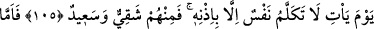
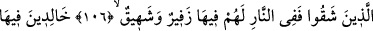
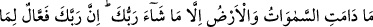
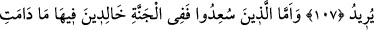
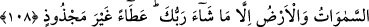

HOŞBAHTLAR VE BEDBAHTLAR
105. O geldiği gün Allah’ın izni olmadan hiç kimse konuşamaz. Onlardan kimi
bedbahttır, kimi mutlu.
106. Bedbaht olanlar ateştedirler. Orada onların (öyle feci) bir soluk alıp verişleri
vardır ki!
107. Rabb’inin dilediği hariç (onlar) gökler ve yer durdukça o ateşte ebedî
kalacaklardır. Çünkü Rabb’in istediğini hakkıyla yapandır.
108. Mutlu kılınanlar ise cennettedirler. Rabb’inin dilediği hariç, gökler ve yer
durdukça onlar da orada ebedî kalacaklardır. Bu, bitmez tükenmez bir lütuftur.
“O” süresinin dolması ile ertelenen kıyâmet günü “geldiği gün” Bu ifâdeye göre
zaman içinde zaman olmuş olması gerekmez. Çünkü bu zaman, gerek o günü, gerekse
sâir vakitleri içine alır. Öyleyse bir zamanın, başka bir zamanın parçası olmasının da
bir mahzûru yoktur. Mesela saat günün, gün haftanın, hafta ise ayın bir bölümüdür.
“Rahman’ın izin verdiklerinden başkası konuşamaz, konuşan da doğruyu söyler.”
(en-Nebe’, 78/38) ve “İzni olmadan O’nun katında kim şefaat edebilir?” (el-
Bakara, 2/255) âyetlerinde belirtildiği üzere “Allah’ın izni olmadan hiç kimse
konuşamaz.” Fayda sağlayacak bir cevap veya kurtaracak bir şefaatte bulunamaz.
Kıyamet günü, dünya seneleri ile bin senelik bir gündür. Bu günde bir takım duraklar,
çeşitli zamanlar ve haller vardır. “O gün her nefis gelip kendini savunmak için
mücâdele edecektir.” (en-Nahl, 16/111) âyetinde buyrulduğu üzere bu uhrevî
devrelerin bâzısında konuşacaklardır. Bazısında ise korku ve dehşetin şiddetinden,
kahır eserlerinin kuvvetle ortaya çıkmasından ve “Bu, (kâfirlerin) konuşamayacağı bir
gündür. Onlara izin de verilmez ki (sözde) mâzeretlerini beyan etsinler.” (el-
Mürselât, 77/35-36) âyetinde belirtildiği üzere konuşmalarına izin verilmeyeceği için
konuşamayacaklardır. Bu devrelerin bazısında ise ağızlarına mühür vurulup elleri
konuşacak, ayakları şahidlik edecektir.
İbn Abbas (r.anhümâ)’dan rivâyet edildiğine göre Hz. Peygamber (s.a.) şöyle